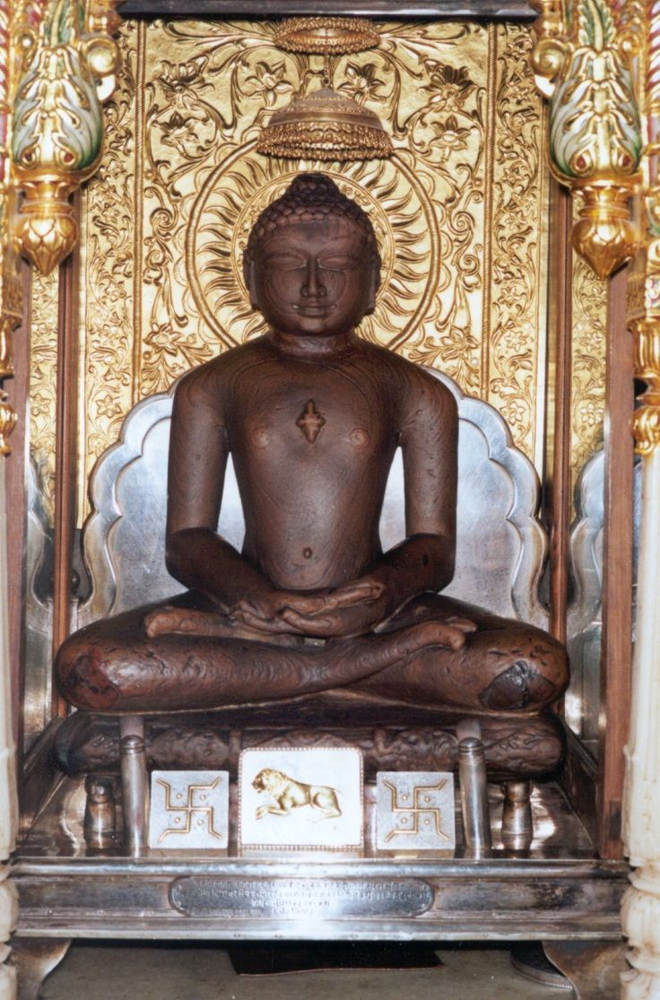

Who Was Mahavira?
Mahavira, also known as Vardhamana, is one of the most important figures in the history of Jainism and Indian philosophy. In Jain tradition, he is recognized as the 24th Tirthankara, the most recent of the twenty-four spiritual teachers believed to have revealed and renewed the path toward liberation during the present cosmic cycle.
The title Tirthankara has a special meaning within Jain tradition. It refers to a spiritual teacher who establishes or reveals a crossing place, or tirtha, through which living beings can move beyond the cycle of bondage, rebirth, and suffering toward spiritual liberation. Mahavira is therefore regarded not simply as a religious teacher, but as a foundational guide within the Jain philosophical tradition.
Mahavira lived in ancient India during a period of significant religious and philosophical activity, when different ascetic movements were exploring questions about suffering, rebirth, karma, liberation, and the nature of human existence. His teachings placed exceptional emphasis on non-violence (ahimsa), self-control, renunciation, truthfulness, non-stealing, celibacy, and freedom from attachment to possessions.
Mahavira did not create Jainism from nothing. Jain tradition presents Jainism as an ancient path associated with earlier Tirthankaras, particularly Parshvanatha, the 23rd Tirthankara. Mahavira is remembered for renewing, organizing, teaching, and strengthening the Jain community and its demanding path of ethical and spiritual discipline.
Mahavira's importance extends beyond the history of Jainism alone. The philosophical tradition associated with his teachings developed influential ideas about non-violence, karma, the nature of the soul, liberation, knowledge, and the complexity of reality. These ideas made Jain philosophy one of the major and enduring traditions of classical Indian philosophical thought.
Mahavira: Quick Facts
- Name — Mahavira, also known as Vardhamana
- Tradition — Jainism
- Religious status — 24th Tirthankara of Jainism
- Historical period — Traditionally placed in the sixth century BCE
- Region — Ancient northern India
- Known for — Jain ethics, asceticism, ahimsa, spiritual discipline, and the path to liberation
- Central ethical principle — Ahimsa, or non-violence/non-injury
- Major ethical teachings — The five vows of Jainism
- Philosophical tradition — Jain philosophy
- Goal of spiritual practice — Liberation (moksha) from the cycle of rebirth
Mahavira and Ancient Indian Philosophy

Mahavira lived during a period in ancient India when religious and philosophical movements were increasingly questioning established ideas about ritual, sacrifice, social life, suffering, karma, rebirth, and liberation. This intellectually active period produced several traditions that explored whether human beings could escape the conditions believed to bind them to continued existence and suffering.
This wider environment included traditions associated with early Buddhism, Jainism, and several other ascetic movements commonly connected with the broader shramana tradition. Teachers and renunciants explored different explanations of karma, the soul, the causes of bondage, and the practices through which spiritual liberation might be achieved.
Jainism developed its own distinctive answer to these questions. Rather than focusing primarily on sacrificial ritual, Jain teachings emphasized self-discipline, non-violence, renunciation, control of the senses, and the purification of the soul from karma. Ethical conduct was therefore understood as closely connected with the larger process of spiritual liberation.
The Jain tradition also developed a distinctive understanding of the relationship between living beings and the consequences of their actions. Karma was understood not simply as an abstract moral principle, but as a fundamental source of bondage that obscures the natural capacities of the soul and contributes to continued rebirth.
Mahavira became one of the most important representatives of this ancient Indian philosophical tradition. His teachings and example of rigorous ascetic discipline helped strengthen the Jain community and contributed to the development of a philosophical tradition concerned with non-violence, knowledge, reality, the soul, karma, and liberation.
Mahavira's Early Life and Background
Mahavira was born as Vardhamana, according to Jain tradition. Jain sources describe him as belonging to a Kshatriya family associated with the region around Vaishali in ancient northern India, an area that was an important center of political, economic, and religious activity during the period in which the Jain and Buddhist traditions emerged.
Traditional accounts preserve detailed stories concerning his parents, birth, childhood, and early character. Some of these narratives describe extraordinary events and qualities associated with his future spiritual importance, reflecting the religious significance that Mahavira acquired within the Jain tradition over the centuries following his lifetime.
The precise historical details of Mahavira's biography, however, are difficult to establish with complete certainty. The surviving Jain literary traditions were transmitted orally and compiled over time, requiring historians to distinguish between details that belong to religious tradition and those that can be reconstructed with greater historical confidence.
Traditional accounts describe Vardhamana as eventually becoming dissatisfied with the limitations of ordinary household life and turning toward the pursuit of spiritual liberation. His decision to renounce worldly life placed him within the wider culture of ancient Indian asceticism, in which individuals abandoned conventional social roles to seek liberation.
Although many details of his early life remain historically uncertain, Mahavira's later importance is clear within Jain tradition. He became the central teacher associated with the most recent renewal of the Jain path and was remembered for an exceptionally rigorous commitment to ascetic discipline, non-violence, and freedom from karmic bondage.
Why Did Mahavira Renounce His Life?
Renunciation is central to the traditional story of Mahavira. According to Jain accounts, he gave up ordinary household life and undertook an extremely demanding ascetic path in search of spiritual liberation. His decision reflected the Jain understanding that attachment and harmful activity help keep the soul bound to karma and the continuing cycle of rebirth.
In the wider intellectual world of ancient India, renunciation represented a deliberate departure from ordinary social and material life. Ascetics sought freedom through different forms of discipline, meditation, restraint, and philosophical inquiry. Mahavira's path became particularly associated with an exceptionally strict form of self-control and non-violence.
Jain asceticism involves careful control over bodily actions, speech, desires, possessions, and attachments. The purpose of this discipline is not merely to demonstrate physical endurance, but to reduce the activities through which new karma is believed to become associated with the soul and to prevent further spiritual bondage.
Mahavira's renunciation was therefore not simply a rejection of material wealth or social status. It represented a broader attempt to overcome attachment, desire, possessiveness, violence, and other forms of activity believed to strengthen karmic bondage and prevent the soul from attaining its natural condition of freedom and knowledge.
His example became an important model within Jainism, particularly for monks and nuns who adopted lives of disciplined renunciation. At the same time, Jain ethical teachings also developed forms of practice for lay followers, allowing the broader community to participate in the ideals of non-violence, truthfulness, restraint, and reduced attachment.
Mahavira's Asceticism and Spiritual Discipline
Mahavira's spiritual path involved severe ascetic practices, meditation, restraint, and detachment from ordinary comforts. Jain tradition describes him as enduring difficult physical conditions while maintaining exceptional control over his actions and responses, presenting his life as an example of the rigorous discipline required for complete spiritual liberation.
Asceticism in Jainism is closely connected with the doctrine of karma. Actions influenced by attachment, desire, ignorance, and harmful intentions are understood as contributing to the soul's continued bondage. Spiritual discipline therefore seeks to prevent the influx of new karma through careful conduct, restraint, awareness, and the reduction of harmful action.
Jain practice also involves the attempt to eliminate karma accumulated through previous actions. Fasting, meditation, self-control, and other forms of ascetic discipline are understood within this larger process of purification. The ultimate purpose is not suffering for its own sake, but the gradual removal of the conditions that obscure the soul's true nature.
Mahavira's emphasis on discipline was inseparable from his commitment to ahimsa, or non-violence. Jain ethics extends concern for non-harm beyond human beings and encourages careful attention to the effects of one's actions upon other living beings. This principle became one of the most distinctive and influential features of the Jain tradition.
After years of ascetic practice, Mahavira is traditionally said to have attained kevala jnana, or complete knowledge. In Jain thought, this achievement represents a profound spiritual realization in which the karmic obstacles preventing the soul from expressing its inherent capacities of knowledge and perception have been completely overcome.
What Is Kevala Jnana in Mahavira's Philosophy?
Kevala jnana, often translated as omniscience or perfect knowledge, is one of the most important concepts associated with Mahavira's spiritual achievement. It represents the highest form of knowledge in Jain philosophy and is connected with the complete removal of the karmic limitations that ordinarily obscure the capacities of the soul.
Jain philosophy holds that the soul, or jiva, possesses inherent capacities for knowledge, perception, energy, and bliss. In ordinary existence, however, these capacities are obscured by karmic bondage. Spiritual ignorance and harmful activity therefore prevent the soul from fully realizing its natural and unlimited potential.
The process of spiritual discipline aims to stop the accumulation of new karma and gradually remove previously accumulated karmic matter. Through ethical conduct, self-restraint, meditation, ascetic discipline, and spiritual insight, the individual works toward freeing the soul from the conditions that limit its knowledge and keep it bound to rebirth.
The attainment of kevala jnana represents the complete realization of the soul's knowledge and perception. A being who reaches this state is known as a kevalin. Jain tradition presents Mahavira as having attained this condition after a long period of rigorous ascetic practice and spiritual discipline.
Kevala jnana should therefore be understood within the wider Jain theory of karma and liberation. It is not merely the acquisition of additional information about the world, but a fundamental transformation in which the soul is no longer limited by the karmic obstacles that characterize ordinary worldly existence.
What Did Mahavira Teach?
Mahavira's teachings emphasize ethical discipline, non-violence, renunciation, spiritual knowledge, and liberation. Jain tradition presents his teachings as a path through which individuals can overcome karmic bondage and ultimately attain freedom from the continuing cycle of birth, death, and rebirth that characterizes ordinary worldly existence.
His ethical teaching is especially associated with the five vows: ahimsa or non-violence, satya or truthfulness, asteya or non-stealing, brahmacharya or celibacy, and aparigraha or non-attachment to possessions. These principles became central to Jain ethical practice, particularly within the ascetic community.
Non-violence occupies an especially important position in Mahavira's teachings. Jain ethics encourages careful attention to the ways in which actions, speech, and intentions may cause harm to living beings. This extensive concern with non-harm shaped Jain religious practice and later made ahimsa one of the most widely recognized contributions of Jain philosophy to Indian ethical thought.
Jain philosophy also developed sophisticated ideas concerning the nature of reality, knowledge, karma, the soul, and liberation. Later philosophical traditions associated with Jainism developed concepts such as anekantavada, which emphasizes the complexity of reality, and syadvada, which provides a distinctive approach to making qualified statements about different aspects of existence.
The broader goal of Mahavira's teaching was spiritual liberation through the purification of the soul. Ethical conduct, knowledge, faith, self-discipline, and renunciation were understood as interconnected parts of this process. Mahavira's importance therefore lies not only in individual ethical principles, but in the comprehensive philosophical path toward freedom that developed within the Jain tradition.
Mahavira and Ahimsa: The Principle of Non-Violence
Ahimsa, meaning non-violence or non-injury, is one of the defining ethical principles of Jainism and occupies a central place in the teachings associated with Mahavira. Jain spiritual discipline places exceptional importance on avoiding harm because violence is understood as having serious ethical and karmic consequences.
Jain ethics extends concern for non-violence far beyond human relationships. Living beings are understood to possess souls, and this produces an unusually broad ethical concern for different forms of life. The principle therefore encourages carefulness in everyday actions that might cause injury, whether intentionally or unintentionally.
Ahimsa is not limited to the avoidance of direct physical violence. Jain ethical thought also emphasizes restraint in speech, intention, and mental attitudes, since anger, hostility, and harmful desires can contribute to actions that injure others and strengthen attachment to the passions.
The importance of ahimsa is closely connected with the Jain understanding of karma. Actions influenced by passions and harmful intentions contribute to karmic bondage, which keeps the soul connected with the cycle of rebirth. Non-violence therefore serves both an ethical purpose and a spiritual one.
Mahavira's emphasis on ahimsa helped make non-violence one of the most distinctive features of Jain philosophy. The principle requires more than simply refusing to commit acts of violence; it calls for a disciplined way of living based on restraint, compassion, carefulness, and responsibility toward other living beings.
What Are the Five Vows of Mahavira?
The five vows are among the most recognizable elements of Jain ethical practice and are closely associated with the teachings of Mahavira. In their strict form, they are known as the five great vows (mahavratas) and are especially associated with Jain monks and nuns who undertake a highly disciplined ascetic life.
The vows are not intended simply as a collection of separate moral rules. Together, they form a comprehensive discipline concerned with controlling actions, speech, desires, possessions, and attachments. Their broader purpose is to reduce harmful activity and prevent the accumulation of karma that binds the soul to worldly existence.
1. Ahimsa — Non-Violence
Ahimsa requires the avoidance of injury to living beings and is the first and most prominent of the five vows. Jain ethics gives this principle an exceptionally wide scope, encouraging carefulness not only in deliberate actions but also in ordinary activities that may unintentionally cause harm to other forms of life.
2. Satya — Truthfulness
Satya is the commitment to truthfulness in speech and communication. Jain ethical practice does not treat truthful speech as permission to speak without restraint; words should also be considered in relation to their possible effects. Speech that is deceptive, harmful, or unnecessarily cruel conflicts with the broader discipline of ethical carefulness.
3. Asteya — Non-Stealing
Asteya means refraining from taking what has not been freely given. The vow extends beyond obvious theft and reflects a broader concern with respecting the possessions, rights, and legitimate claims of others. It also requires restraint toward desires that encourage unjust or exploitative acquisition.
4. Brahmacharya — Celibacy or Chastity
Brahmacharya is the vow of celibacy for Jain mendicants and forms part of the broader discipline of controlling sensual desire and attachment. Jain tradition associates intense attachment and passion with karmic bondage, making control of desire an important element of the ascetic path toward spiritual purification and liberation.
5. Aparigraha — Non-Possessiveness
Aparigraha means limiting attachment to possessions and material things. For ascetics, this principle is practiced through radical renunciation and non-possession, while householders are encouraged to limit unnecessary accumulation. The deeper purpose is to reduce the attachment and desire that keep the soul involved in worldly bondage.
Jain tradition distinguishes the strict form of these vows undertaken by mendicants from more limited forms practiced by householders. Despite these differences in application, the five principles provide a central ethical framework for Jain life and express the close relationship between moral conduct, self-discipline, karma, and the pursuit of liberation.
Mahavira's Teachings on Karma and Rebirth
Karma is fundamental to Jain philosophy and to the spiritual path associated with Mahavira. Jain thinkers understand karma not merely as an abstract moral principle of reward and punishment, but as a form of subtle material substance that becomes associated with the soul through actions, passions, attachments, and other forms of activity.
The soul is understood in Jain philosophy as possessing inherent qualities of knowledge, perception, and consciousness. Karmic matter obscures and limits these natural capacities, preventing the soul from expressing its full potential. Spiritual progress therefore requires understanding how karmic bondage arises and how it can gradually be overcome.
Harmful actions, attachment, anger, pride, deceit, greed, and other passions contribute to the processes through which karma binds the soul. As long as karmic bondage continues, the soul remains connected with samsara, the continuing cycle of birth, death, and rebirth across different forms of existence.
Mahavira's path emphasizes ethical discipline, restraint, ascetic practice, and spiritual knowledge as means of preventing the influx of new karma. Jain philosophy also teaches that previously accumulated karma must gradually be eliminated through disciplined conduct, self-control, and practices directed toward spiritual purification.
The Jain theory of karma therefore gives ethical actions a deeply philosophical significance. The way a person thinks, speaks, acts, and responds to desire is connected with the condition of the soul itself. Liberation ultimately requires the complete ending of karmic bondage and freedom from the cycle of rebirth.
Mahavira's Philosophy of Liberation and Moksha
The ultimate goal of Jain spiritual practice is moksha, or liberation from samsara, the cycle of repeated birth and death. Liberation is achieved when the soul becomes completely free from karmic bondage and is no longer subject to the conditions that produce further rebirth.
Jain philosophy understands the soul as possessing inherent capacities that are obscured by accumulated karma. The spiritual path is therefore a process of purification in which these karmic limitations are gradually removed. Liberation represents the complete removal of the karmic matter that binds the soul to embodied and worldly existence.
A liberated soul is understood to possess its intrinsic qualities without the limitations imposed by karma. Moksha is therefore not simply a temporary experience of peace or an emotional state achieved during meditation. It is the permanent liberation of the soul from the processes of karmic bondage and repeated rebirth.
The path toward liberation is traditionally expressed through the Three Jewels, also known as right faith, right knowledge, and right conduct. These three dimensions are closely connected because correct understanding alone is not considered sufficient without ethical discipline and a corresponding transformation of one's way of life.
Mahavira's philosophy of liberation therefore brings together knowledge, ethics, ascetic discipline, and self-control. The final goal is not the acquisition of worldly power or material prosperity, but complete freedom from attachment and karma. This vision of spiritual liberation remains one of the central foundations of Jain philosophy and religious practice.
The Three Jewels of Jainism
Jain philosophy identifies three closely interconnected elements of the path toward liberation, commonly known as the Three Jewels (Ratnatraya). They are right faith or perception, right knowledge, and right conduct, and together they describe the intellectual, spiritual, and ethical dimensions of Jain practice.
The Three Jewels are important because Jainism does not regard liberation as the result of belief alone or intellectual understanding alone. Spiritual progress requires a transformation of how a person understands reality and how that understanding is expressed through disciplined conduct and restraint in everyday life.
Right Faith — Samyak Darshana
Samyak Darshana, often translated as right faith, right perception, or right vision, refers to an appropriate orientation toward reality and the fundamental principles of Jain teaching. It involves moving beyond confused or distorted attitudes and developing a correct spiritual perspective on the nature of the soul, karma, and liberation.
Right Knowledge — Samyak Jnana
Samyak Jnana, or right knowledge, means understanding reality correctly and overcoming forms of ignorance that obstruct spiritual progress. Jain philosophy places considerable importance on knowledge, but knowledge must be reliable and properly understood rather than consisting merely of information, memorization, or intellectual speculation.
Right Conduct — Samyak Charitra
Samyak Charitra, or right conduct, means putting spiritual understanding into practice through ethical discipline, restraint, and the gradual reduction of harmful attachments and passions. The principles of non-violence, truthfulness, non-stealing, chastity, and non-possessiveness are closely connected with this dimension of the Jain path.
Together, the Three Jewels describe the integrated character of Jain liberation. Right perception provides the proper spiritual orientation, right knowledge develops understanding, and right conduct transforms that understanding into disciplined action. None of these dimensions is regarded as fully sufficient when separated from the others.
Mahavira and Anekantavada: Many-Sided Reality
Anekantavada, commonly translated as the doctrine of many-sidedness or non-one-sidedness, is one of the best-known concepts in Jain philosophy. It expresses the idea that reality is complex and that no single limited perspective can necessarily capture every aspect of a thing or describe its complete nature without qualification.
The doctrine developed within the broader philosophical tradition of Jainism, whose later thinkers gave systematic attention to questions about reality, knowledge, language, and philosophical disagreement. Although anekantavada became especially elaborated in later Jain philosophy, it is closely connected with the intellectual tradition that developed from the teachings associated with Mahavira.
According to this approach, an object or event may possess different aspects that become visible from different standpoints. A statement may therefore identify something genuine about reality while still failing to express everything that can truthfully be said about the same object under other conditions or perspectives.
Anekantavada does not simply mean that every opinion is equally correct or that contradictions can always be accepted without examination. Jain philosophers developed more precise methods for determining the conditions and standpoints under which particular statements could be considered valid or incomplete.
The doctrine is therefore important for understanding Jain approaches to knowledge and philosophical disagreement. It encourages caution toward absolute and one-sided claims while recognizing the complexity of reality and the limitations of individual viewpoints. For this reason, anekantavada remains one of Jainism's most distinctive philosophical contributions.
What Is Syadvada in Jain Philosophy?
Syadvada is a Jain philosophical method concerned with making qualified or conditional statements about reality. It is closely related to anekantavada and reflects the idea that a statement should be understood in relation to particular conditions, perspectives, or aspects rather than automatically treated as an unrestricted description of the whole of reality.
The term syat is often understood as introducing a qualification such as "in some respect" or "from a certain standpoint." This does not simply express uncertainty or indecision. Instead, it provides a philosophical method for recognizing that the truth of a statement may depend upon the particular aspect of reality being described.
Jain philosophers used this approach to avoid overly absolute claims. Something may exist in one respect, for example, while changing or failing to exist in another respect. The aim is to describe complex reality more carefully by identifying the conditions under which a particular statement is valid.
Syadvada is also connected with the Jain analysis of language and knowledge. Human statements are limited by the standpoint from which they are made, while reality itself may possess more aspects than a single proposition can express. Qualified language therefore becomes an important tool for philosophical precision rather than a rejection of truth.
These ideas became major parts of the later philosophical development of Jainism and demonstrate the sophisticated attention Jain thinkers gave to epistemology, language, and logical analysis. Together with anekantavada, syadvada represents an important attempt to explain how limited knowers can make meaningful statements about a complex and many-sided reality.
Mahavira and Jain Philosophy
Mahavira's teachings became foundational to the development of Jain philosophy, one of the major philosophical traditions of ancient India. Jain thinkers developed systematic discussions concerning the nature of reality, the soul, karma, knowledge, ethics, causation, and liberation over many centuries following the period traditionally associated with Mahavira.
Jain metaphysics distinguishes between jiva, or living souls, and ajiva, the broad category of non-living realities. Souls are understood to possess consciousness and the capacity for knowledge, while their involvement with karmic matter connects them with the changing conditions of worldly existence and repeated rebirth.
Karma occupies a particularly important position within this philosophical framework. Jain thought describes karmic bondage as a real process affecting the condition of the soul, which means that ethical and psychological actions have consequences extending beyond ordinary social morality. Liberation requires the complete ending and removal of karmic bondage.
Jain philosophy also developed sophisticated theories of knowledge and perspective. Concepts such as anekantavada, syadvada, and related methods of analysis examine the limitations of individual viewpoints and the difficulty of describing complex reality through simple and unrestricted statements.
This philosophical framework connects metaphysics and ethics particularly closely. The way a person thinks, speaks, and acts affects the condition of the soul and its progress toward liberation. Mahavira's importance therefore extends beyond religious asceticism, because the tradition associated with his teachings developed into a rich and enduring system of Indian philosophy.
Mahavira and Parshvanatha
Mahavira was not the first Tirthankara in Jain tradition. Parshvanatha, recognized as the 23rd Tirthankara, occupies a particularly important position as Mahavira's immediate predecessor in the traditional Jain succession. Unlike many earlier Tirthankaras whose lives belong primarily to sacred and cosmological tradition, Parshvanatha is also often regarded by scholars as an important early figure in the historical development of the Jain ascetic tradition.
Jain textual traditions connect Parshvanatha with a system known as the fourfold restraint, involving principles corresponding to non-violence, truthfulness, non-stealing, and non-possession. Later accounts frequently explain Mahavira's discipline through the addition or explicit separation of brahmacharya, or celibacy, producing the familiar five-vow framework associated with Jain asceticism.
This relationship, however, should be presented with historical caution. Jain traditions themselves have preserved different interpretations of the precise relationship between the teachings of Parshvanatha and Mahavira. In particular, Śvetāmbara and Digambara traditions have not always explained the development of the vows in exactly the same way.
The connection between Mahavira and Parshvanatha is nevertheless extremely important because it demonstrates that Jainism was understood as an established spiritual tradition rather than a movement created suddenly by Mahavira. Mahavira is traditionally presented as the latest great teacher in a much older succession of Jinas and Tirthankaras who reveal or re-establish the path to liberation. :contentReference[oaicite:1]{index=1}
What Is a Tirthankara? Why Is Mahavira the 24th?
The Sanskrit term Tirthankara is commonly translated as "ford-maker". The image refers metaphorically to a teacher who establishes a crossing through the difficult river of worldly existence and shows living beings the path toward spiritual liberation. A Tirthankara is therefore far more than an ordinary religious teacher within Jain philosophy and religious tradition.
In Jain tradition, Mahavira is the 24th Tirthankara of the present cosmic age or cycle. He is regarded as the most recent Jina whose teaching remains available within the current period. Jain tradition understands the fundamental truth taught by the Jinas as timeless, although the path may need to be rediscovered and taught again in different cosmic periods.
The twenty-four Tirthankaras of the present cycle begin with Rishabhanatha, also called Adinatha, and end with Mahavira. Parshvanatha occupies the position immediately before him as the 23rd Tirthankara. Each Tirthankara belongs to the larger Jain understanding of cosmic time, spiritual decline, renewal, and the repeated rediscovery of the path leading beyond karmic bondage.
For this reason, describing Mahavira simply as the "founder of Jainism" can be misleading from the perspective of Jain tradition. He is more accurately described as the 24th and most recent Tirthankara of the present cosmic cycle, while historians may separately study his role in the development and organization of the Jain communities known from ancient India. :contentReference[oaicite:2]{index=2}
Mahavira and Gautama Buddha: Similarities and Differences
Mahavira and Gautama Buddha were major teachers associated with the intellectually active world of ancient northern India. Both are traditionally placed within the wider shramana environment, in which ascetics and teachers explored questions concerning karma, rebirth, suffering, renunciation, ethical discipline, and liberation from the cycle of worldly existence.
Their traditions nevertheless developed important differences in spiritual practice and philosophical doctrine. Both Jainism and Buddhism value ethical discipline and liberation, but they explain the nature of the person and the process of liberation in substantially different ways. Their similarities should therefore not obscure the independent development of Jain and Buddhist philosophical traditions.
One of the most important differences concerns the nature of the self. Jain philosophy affirms the existence of jivas, living souls that are bound by karma and capable of liberation. Early Buddhist philosophy, by contrast, is closely associated with the analysis of experience through the doctrine of anatta, which rejects the idea of a permanent and unchanging self underlying the changing components of experience.
Their approaches to asceticism also differed. Jain traditions became famous for particularly rigorous disciplines of non-violence, renunciation, and ascetic restraint, while Buddhist tradition is associated with the Middle Way, which rejects both sensual indulgence and extreme self-mortification. These differences reflect distinct paths toward overcoming karmic or existential bondage.
The comparison between Mahavira and Buddha is therefore especially valuable for understanding the diversity of ancient Indian philosophy. Both figures became foundational to major intellectual traditions, yet Jain and Buddhist thinkers developed different accounts of the self, reality, karma, knowledge, ascetic practice, and the nature of liberation. :contentReference[oaicite:3]{index=3}
What Do We Actually Know About Mahavira?
Mahavira is one of the most important figures in the history of ancient Indian religion and philosophy, but reconstructing his precise biography requires historical caution. The detailed accounts of his birth, family, ascetic life, enlightenment, and final liberation come primarily through Jain textual traditions that were transmitted, preserved, and developed over long periods of time.
Modern scholarship generally treats Mahavira as an important historical teacher associated with ancient northern India and with the Jain tradition. His traditional dates are commonly given as 599–527 BCE or, in some chronological traditions and scholarly discussions, with variations in the dating of his death. The precise chronology remains a subject that requires careful treatment rather than absolute certainty.
Widely Established in Jain Tradition
- Mahavira is traditionally known as Vardhamana.
- Jains recognize him as the 24th Tirthankara of the present cosmic cycle.
- He is associated with ancient northern India, particularly the region traditionally connected with Magadha and Vaishali.
- Jain tradition remembers him as a teacher who practiced rigorous renunciation and ascetic discipline.
- His teaching is centrally associated with non-violence, restraint, karma, liberation, and the disciplined purification of the soul.
Historical Questions and Variations
- The exact dates of Mahavira's birth and death remain connected with different chronological traditions and scholarly reconstructions.
- Jain traditions preserve variations in some details of his biography and religious career.
- Many detailed narratives concerning his life belong to developed religious and literary traditions rather than contemporary historical records.
- The precise wording of every teaching attributed directly to the historical Mahavira cannot be established with complete certainty.
The most careful approach is therefore neither to dismiss Jain tradition nor to treat every traditional narrative as independently verified modern history. Mahavira's life should be understood through both perspectives: the enormously important religious memory preserved by Jain communities and the more limited evidence available for historical reconstruction. :contentReference[oaicite:4]{index=4}
Mahavira's Main Philosophical Ideas
Mahavira's philosophical and ethical legacy is best understood through a group of closely connected ideas concerning the soul, karma, ethical discipline, renunciation, knowledge, and liberation. These ideas do not form separate subjects in Jain thought. Instead, they belong to a single spiritual framework in which the way a person thinks and acts affects the condition of the soul and its continued involvement in worldly existence.
Ahimsa and Ethical Discipline
Ahimsa, or non-violence and non-injury, is one of the most distinctive principles associated with Jain ethics. The commitment to avoiding harm extends far beyond the prohibition of obvious physical violence and requires careful attention to one's actions, speech, and relationship with other living beings. Jain ethical discipline therefore connects non-violence closely with awareness, restraint, and responsibility.
Self-Control and Renunciation
Spiritual progress requires control over desires, passions, actions, and attachments. Jain renunciatory practice seeks to reduce the activities that contribute to karmic bondage and to weaken attachment to possessions and worldly identity. Ascetic discipline is therefore not valued merely as an act of physical endurance, but as part of a larger effort to transform the relationship between the soul, action, desire, and karmic matter.
Karma and Liberation
Jain philosophy gives karma a particularly important metaphysical role. Karmic matter is understood as becoming associated with the soul and contributing to its continued movement through samsara, the cycle of rebirth. Through ethical conduct, restraint, ascetic practice, and spiritual knowledge, the individual seeks both to prevent further karmic accumulation and to remove the karma already binding the soul.
Knowledge and the Complexity of Reality
Jain philosophy also became famous for its sophisticated investigations of knowledge and reality. The later development of anekantavada, or the doctrine of many-sidedness, emphasized that complex objects of knowledge cannot always be adequately described from one isolated perspective. Related approaches to viewpoints and qualified predication became major contributions of Jain philosophers to debates about language, knowledge, change, permanence, and the nature of reality.
Mahavira's Influence on Jainism and Indian Philosophy
Mahavira occupies a central position in the development of Jainism because Jain communities preserve him as the 24th and most recent Tirthankara of the present cosmic cycle. His teaching became the foundation of living Jain religious traditions and was transmitted through monastic communities, lay communities, ethical practices, ritual traditions, canonical literature, and later philosophical works.
The Jain emphasis on ahimsa became one of the most distinctive ethical traditions to emerge from ancient India. Jain thinkers and communities developed demanding practices of non-harm that influenced attitudes toward food, occupation, speech, possessions, and the treatment of living beings. The principle of non-violence was closely connected with broader ideals of self-control, carefulness, and spiritual purification.
Over the centuries, Jain philosophers developed extensive systems of metaphysics, epistemology, logic, and ethics. They investigated the nature of the soul, karmic matter, perception, valid knowledge, language, and reality. Classical Jain philosophy therefore became an important participant in the wider intellectual debates of South Asia, engaging with Buddhist, Hindu, and other philosophical traditions.
The doctrines commonly known as anekantavada, nayavada, and forms of qualified predication associated with syadvada became especially important in this later philosophical development. These ideas should be understood within the history of Jain philosophical reflection rather than being automatically attributed in their fully developed systematic form to the historical Mahavira himself.
Mahavira's broader importance therefore extends beyond the popular image of him as simply an ancient ascetic teacher. The Jain tradition associated with his teaching produced a major and continuous philosophical culture concerned with ethical responsibility, non-violence, the nature of consciousness, karma, knowledge, and the possibility of liberation. His legacy remains central to understanding both Jainism and the wider history of Indian philosophy. :contentReference[oaicite:1]{index=1}
Mahavira Explained Simply
Mahavira was an ancient Indian spiritual teacher who is regarded in Jainism as the 24th Tirthankara of the present cosmic cycle. He is traditionally known as Vardhamana and is remembered for a rigorous path of renunciation, self-discipline, non-violence, and spiritual liberation. Jain communities regard his teaching as the most recent available teaching of a Jina in the present cosmic period.
At the center of Jain philosophy is the belief that living beings possess souls and that these souls remain bound to worldly existence through karma. Spiritual progress requires disciplined conduct and the reduction of attachment and harmful action. The ultimate goal is moksha, or liberation, in which the soul becomes completely free from karmic bondage and the continuing cycle of rebirth.
Mahavira is especially associated with the Jain commitment to ahimsa, meaning non-violence or non-injury. This principle encourages carefulness toward living beings and extends ethical responsibility beyond obvious acts of physical violence. Jain spiritual discipline also emphasizes truthfulness, non-stealing, restraint, and non-attachment to possessions.
The Jain tradition that developed around the teachings of the Jinas later produced sophisticated philosophical discussions about knowledge, reality, language, and different perspectives. Concepts such as many-sidedness became important features of classical Jain philosophy and demonstrate that Jainism developed not only as a religious tradition but also as a major tradition of philosophical inquiry.
- Who was he? — Mahavira, traditionally known as Vardhamana and regarded by Jains as the 24th Tirthankara.
- What is he famous for? — His central place in Jain teachings on non-violence, ascetic discipline, karma, and liberation.
- Central ethical principle: — Ahimsa, or non-violence and non-injury toward living beings.
- Important vows: — Ahimsa, satya, asteya, brahmacharya, and aparigraha within the Jain ethical tradition.
- Ultimate goal: — Moksha, the complete liberation of the soul from karmic bondage and rebirth.
- Philosophical legacy: — Jain traditions of metaphysics, epistemology, ethics, karma theory, and many-sided approaches to reality.
A Famous Teaching Associated with Mahavira
“All breathing, existing, living, sentient creatures should not be slain, nor treated with violence, nor abused, nor tormented, nor driven away.”
Frequently Asked Questions About Mahavira
Who was Mahavira?
Mahavira, also known as Vardhamana, was an ancient Indian spiritual teacher and the 24th Tirthankara of Jainism. He is one of the most important figures in the development of Jain religious and philosophical thought.
What is Mahavira famous for?
Mahavira is famous for his teachings on ahimsa, ascetic discipline, the five vows, karma, renunciation, and liberation. Jain tradition regards him as the 24th Tirthankara.
What did Mahavira teach?
Mahavira taught a path based on non-violence, truthfulness, non-stealing, celibacy, non-possessiveness, self-control, spiritual knowledge, and liberation from karmic bondage.
What are the five vows of Mahavira?
The five vows are ahimsa (non-violence), satya (truthfulness), asteya (non-stealing), brahmacharya (celibacy or chastity), and aparigraha (non-possessiveness).
What is Mahavira's philosophy of ahimsa?
Ahimsa is the principle of avoiding injury or violence toward living beings. In Jain ethics, it is practiced through carefulness in actions, speech, and conduct and is central to spiritual discipline.
Was Mahavira the founder of Jainism?
Jain tradition does not regard Mahavira as the founder of Jainism. He is the 24th Tirthankara and is understood within a much older succession of Tirthankaras. He played a central role in teaching and organizing the Jain tradition in the historical period associated with him.
Who was the 23rd Tirthankara before Mahavira?
The 23rd Tirthankara was Parshvanatha. Jain tradition places Parshvanatha before Mahavira and associates him with an earlier formulation of important Jain ethical restraints.
What is Mahavira's view of karma?
Jain philosophy understands karma as a form of bondage associated with the soul. Ethical and spiritual discipline aims to prevent new karmic accumulation and remove existing karma.
What is moksha according to Mahavira?
Moksha is liberation from samsara, the cycle of birth and death. In Jain philosophy, liberation occurs when the soul is completely freed from karmic bondage.
What is kevala jnana?
Kevala jnana means complete or perfect knowledge. In Jain philosophy, it is associated with the removal of karmic obstructions to the soul's inherent knowledge.
What is anekantavada?
Anekantavada is the Jain doctrine of many-sidedness. It holds that reality is complex and that a single limited perspective cannot completely describe every aspect of reality.
What is Mahavira's relationship with Jainism?
Mahavira is regarded as the 24th Tirthankara of Jainism and one of its most important teachers. His teachings became central to Jain ethics, ascetic practice, and the path toward liberation.
When did Mahavira live?
Mahavira is traditionally placed in the sixth century BCE, although the exact dates of his life are debated and differ between traditional chronologies and modern historical scholarship.
Why is Mahavira important today?
Mahavira remains important because his teachings provide one of the world's most rigorous philosophical and ethical approaches to non-violence, self-discipline, non-attachment, and liberation.
Related Indian Philosophers and Thinkers
Mahavira belongs to a rich tradition of Indian philosophical thought. Explore other influential thinkers whose ideas shaped discussions of ethics, consciousness, liberation, reality, and human existence.
Explore Jainism and Indian Philosophy
Mahavira's philosophy connects with some of the major questions of Indian thought: What is the self? Why are living beings bound to rebirth? How does karma work? What is knowledge? And how can a person attain liberation?
Why Mahavira Still Matters
Mahavira's importance extends far beyond the history of Jainism. His teachings present an unusually rigorous account of ethical responsibility, non-violence, self-restraint, and freedom from attachment.
His philosophy connects ethics with metaphysics: the way a person lives affects the condition of the soul. Non-violence, truthfulness, non-stealing, celibacy, and non-possessiveness are therefore not merely social rules but parts of a spiritual discipline directed toward liberation.
Through Jainism, the legacy associated with Mahavira became one of the enduring traditions of Indian philosophy. His emphasis on ahimsa, disciplined living, and liberation continues to make him an essential figure for anyone studying Jainism, Indian philosophy, ethics, or the history of ideas.
Explore Great Philosophers